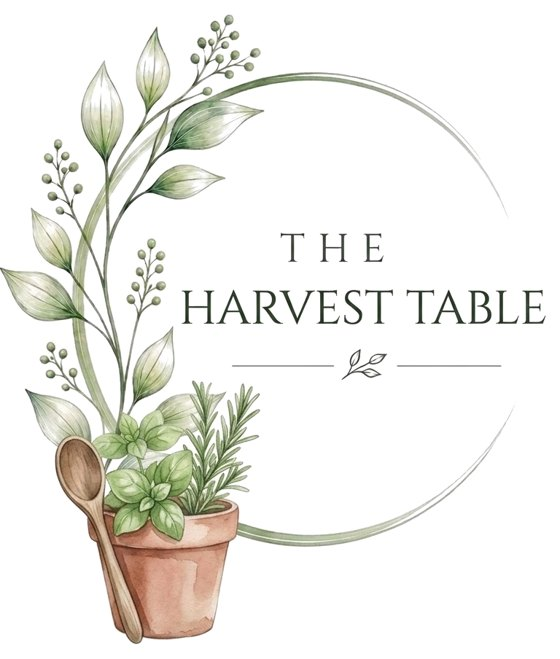

Community · Food
The Harvest Table
From windowsill to table. Simple, seasonal food made with things you can grow, and recipes shared by our community.
Recipe of the month

Winter Vegetable Soup
A warming, traditional soup of leeks, carrots and potato, ready in about 35 minutes. Finish it with snipped chives from your windowsill.
Get the recipeShare your recipe
Have a favourite seasonal or one-pan recipe, especially one using home-grown herbs? Send it to us and we may feature it here, with full credit and a link to your account.
Grow your own
Windowsill herbs for beginners
Five easy herbs to grow indoors and cook with all year. Supermarket pots work well: split them into a few smaller pots so each plant has room to grow.
Basil
- Light
- The sunniest windowsill you have, and warmth. It dislikes cold draughts.
- Water
- Water when the top of the soil feels dry, ideally in the morning.
- Harvest
- Pinch out the tips regularly to keep it bushy, and pick from the top, not the bottom leaves.
Rosemary
- Light
- Full sun. A south-facing window is ideal.
- Water
- Let the soil dry out between waterings; it hates soggy roots.
- Harvest
- Snip sprigs as you need them, and never cut back into old, woody stems.
Mint
- Light
- Bright light, but it copes with a little shade.
- Water
- Keep the soil moist; mint is thirsty.
- Harvest
- Always grow it in its own pot, because it spreads fast. Pick often to keep it fresh.
Chives
- Light
- A bright, sunny spot.
- Water
- Keep the soil lightly moist.
- Harvest
- Cut a few stems right down to the base; they grow back quickly.
Parsley
- Light
- Bright light, with some shade at the hottest time of day.
- Water
- Keep the soil evenly moist.
- Harvest
- Pick the outer stems first, so new growth keeps coming from the centre.
Got pets? Basil and rosemary are listed as non-toxic to cats and dogs by the ASPCA, but mint, chives and parsley are not, so keep those out of reach. Chives, like onions and garlic, are especially harmful to cats and dogs. More on pet-safe plants →
Around the table
Share what you're cooking, swap tips and tell us how our recipes turned out. Sign in with a free GitHub account to post; your username and comments will be public.
Every recipe we publish lists its main allergens. Always check ingredients if you have allergies or are cooking for others.